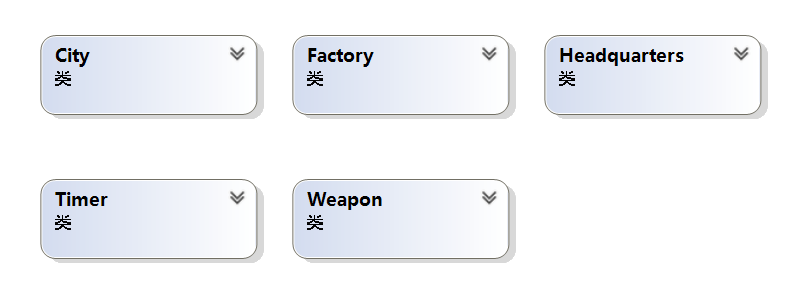
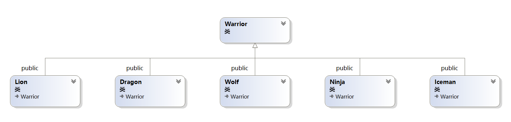

# 题目描述
原题目链接
OpenJudge - 024: 魔兽世界三 (开战)
# 一些对题目的理解
每个回合（一个小时内）会发生诸如降生，逃跑，前进等的事件。
双方司令部之间有若干城市，编号 1-n, 战士每个回合前进一步，一旦有城市有 2 个战士，就会发生战斗，战斗如果发生平局，双方都活着就会继续前进。
战士拥有武器，战士靠武器伤害敌军，每个回合选择一个武器（从编号最小的武器开始轮流），直到一方胜利，双方都死亡或者双方平局（双方没有武器或双方的武器和生命值不再发生变化）
# 武器特点
- sword 使用次数无限，攻击力是战士本身的 20%。
- bomb 使用次数 1，攻击力 40%，对自己 20%。
- arrow 使用次数 2，攻击力 30%
# 战士特点：
- 龙 dragon 在战斗中存活会欢呼。
- 忍者 ninja 使用 bomb 不会伤到自己。
- 冰人 iceman 每次前进会损失 10% 生命值。
- 狮子 lion 有忠诚值属性，每次前进会损失，损失到 0 会逃跑。
- 狼 wolf 没有自带武器，但可以抢夺敌人编号最小的武器。
# 类的设计


整个项目中所有要用到的参数，城市，指挥部都放在 Factory 类中，通过 Factory 类可以访问任何东西。
Timer 是一个仅仅有静态变量和方法的类，与其它类也没有关系，因为整个过程中时间是唯一的，不需要实例化。
在 Headquarters 中有它目前管理的战士指针数组，即 vector<Warrior*>。战士类派生出五种战士。
每个战士有自己的武器库 vector<Weapon>
在 Factory 类中，操纵 city 数组来完成行军，战斗等功能。
# 一些关键部分的实现
# 整体框架
int main() | |
{ | |
Factory::InitProject(); | |
int cnt, n = 0; //cnt: 数据组数 n: 该组数据的编号 | |
cin >> cnt; | |
//Factory::InputData(); | |
while (cnt--) | |
{ | |
Factory::InputData(); | |
Factory f; | |
f.Start(n); | |
} | |
return 0; | |
} |
// 项目开始 | |
void Start(int& n) | |
{ | |
Timer::InitTime(); | |
n++; | |
head_red = new Headquarters(RED, this); | |
head_blue = new Headquarters(BLUE, this); | |
cout << "Case " << n << ":" << endl; | |
/* cout events */ | |
while (!isEnd && Timer::GetMin()<Timer::totalGameTime) | |
{ | |
Update(); | |
Timer::UpdateHour(); // 更新时间 | |
} | |
} |
// 一个小时内的事情与打印日志 | |
void Update() | |
{ | |
// 降生播报 | |
head_red->WarriorsBirth(); | |
head_blue->WarriorsBirth(); | |
Timer::UpdateMin(5); | |
if (Timer::GetMin() > Timer::totalGameTime) return; | |
/* lion run */ | |
RunReport(); | |
Timer::UpdateMin(5); | |
if (Timer::GetMin() > Timer::totalGameTime) return; | |
/* march */ | |
head_red->WarriorsMarch(); | |
head_blue->WarriorsMarch(); | |
MarchReport(); | |
if (isEnd) return; | |
Timer::UpdateMin(25); | |
if (Timer::GetMin() > Timer::totalGameTime) return; | |
/* wolf */ | |
WolfSnatchReport(); | |
Timer::UpdateMin(5); | |
if (Timer::GetMin() > Timer::totalGameTime) return; | |
/* battle 40min*/ | |
Battle_report(); | |
Timer::UpdateMin(10); | |
if (Timer::GetMin() > Timer::totalGameTime) return; | |
// 指挥部状态播报 | |
head_red->HeadquartersStatus(); | |
head_blue->HeadquartersStatus(); | |
// 战士状态播报 | |
Timer::UpdateMin(5); | |
WarriorReport(); | |
} |
# 战斗过程
# 主要过程 (在一个城市内)
- 对武器排序
- （若红方先手）红方攻击
- 检查结果
- 蓝方攻击
- 检查结果
- 看看是不是平衡了
注：其中检查有战士死亡的情况很容易，但检查是不是平局必须考虑题目中非常坑的一点，就是战士的攻击力可能为 0，如果不额外判断可能导致程序进入死循环。且平局的情况要求用完所有有使用次数的武器。因此设计了一个算法：首先有一个计数器值为 20（最极端的情况有 10 把 arrow，每个 arrow 可以用 2 次），表明 20 个回合检查一次是否平衡。假如计数器为 0，那么就看看这个战士的武器使用次数和生命值是不是不再变化了，如果是说明平局。具体代码在函数 CheckBalance 中。
void City::Battle() | |
{ | |
if (r_w == NULL || b_w == NULL) return; // 没有战斗发生 | |
Warrior* r_w = this->r_w, * b_w = this->b_w; | |
turn = (index % 2 == 1) ? RED : BLUE; // 奇数城市，红先攻击 | |
Weapon* red_weapon, * blue_weapon; | |
// 排序 | |
r_w->WeaponSort(); | |
b_w->WeaponSort(); | |
int ret; | |
int round = MAXROUND; //MAXROUND 是一个宏，值为 20 | |
int r_life = r_w->GetCurLife(), b_life = b_w->GetCurLife(); | |
int r_weapon_time = r_w->GetWeaponSum(), b_weapon_time = b_w->GetWeaponSum(); | |
/* 战斗过程 */ | |
if (RED == turn) | |
{ | |
// 红方先手 | |
while (!r_w->IsDead() && !b_w->IsDead()) | |
{ | |
red_weapon = r_w->SelectWeapon(); | |
blue_weapon = b_w->SelectWeapon(); | |
r_w->Attack(b_w, red_weapon); | |
// 红方胜利？ | |
ret = CheckResult(r_w, b_w, red_weapon, blue_weapon); | |
if (0 == ret) break; | |
b_w->Attack(r_w, blue_weapon); | |
ret = CheckResult(r_w, b_w, red_weapon, blue_weapon); | |
if (0 == ret) break; | |
ret = CheckBalance(round, r_w, b_w, r_life, b_life, r_weapon_time, b_weapon_time); | |
if (0 == ret) break; | |
} | |
} | |
else | |
{ | |
// 蓝方先手 | |
while (!r_w->IsDead() && !b_w->IsDead()) | |
{ | |
red_weapon = r_w->SelectWeapon(); | |
blue_weapon = b_w->SelectWeapon(); | |
b_w->Attack(r_w, blue_weapon); | |
ret = CheckResult(r_w, b_w, red_weapon, blue_weapon); | |
if (0 == ret) break; | |
r_w->Attack(b_w, red_weapon); | |
ret = CheckResult(r_w, b_w, red_weapon, blue_weapon); | |
if (0 == ret) break; | |
ret = CheckBalance(round, r_w, b_w, r_life, b_life, r_weapon_time, b_weapon_time); | |
if (0 == ret) break; | |
} | |
} | |
/* 欢呼 */ | |
if (r_w) | |
{ | |
r_w->Yell(); | |
r_w->ResetTurn(); | |
} | |
if (b_w) | |
{ | |
b_w->Yell(); | |
b_w->ResetTurn(); | |
} | |
} |
// 检查状态（武器 + 生命值）是否不再变化 | |
int City::CheckBalance(int& round, Warrior* r_w, Warrior* b_w, int& r_life, int& b_life, int& r_weapon_time, int& b_weapon_time) | |
{ | |
int ret = -1; | |
round--; | |
if (0 == round) | |
{ | |
round = MAXROUND; | |
if (r_w->GetCurLife() == r_life && b_w->GetCurLife() == b_life | |
&& r_w->GetWeaponSum() == r_weapon_time && b_w->GetWeaponSum() == b_weapon_time | |
) | |
{ | |
// 状态不变 | |
BalanceLog(r_w, b_w); | |
ret = 0; | |
} | |
else | |
{ | |
r_life = r_w->GetCurLife(); | |
b_life = b_w->GetCurLife(); | |
r_weapon_time = r_w->GetWeaponSum(); | |
b_weapon_time = b_w->GetWeaponSum(); | |
} | |
} | |
return ret; | |
} |
# 总结
遇到了无数 bug，但是很多都有点忘了，总结了一些技巧
- 如果编译器不认识自己的类要活用前向声明。
- 尽量在组合成的类中有指向父类的指针，方便操作，父子能相互访问。
- 大胆用指针，比如 new 一个战士出来，加到 vector 中。